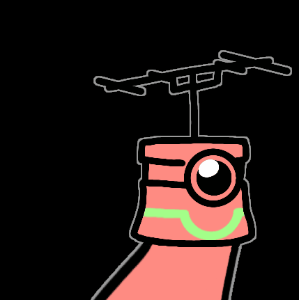
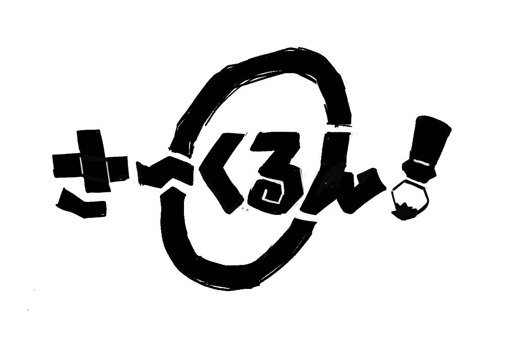

！開発中に出た文章をそのまま載せているため読みやすさは考慮していません！
水墨画のゲーム案
水墨画のゲーム案
豪快ポイント
小さく書いた文字(一般的な半紙に書くぐらい)から巨大なオブジェクトが生成される。
小→大の変化と勢いが豪快さ。
コンセプト
書道で世界を救おうぜ！
書道を使って敵を倒そうぜ！など
概要
水墨画家の主人公(プレイヤー)の大筆には、書いた物を創造する力がある。それを駆使し道を切り開き、敵を倒していくアクションゲーム。
プレイヤーは特定の漢字を「書く」ことが出来、竹と書くと地面から竹が生え、岩と書くと空中から岩を降らせられる。
部位合成モード(仮)
例えば山、月、月と書くことで文字を崩に進化させることができる。この場合前方の地盤崩落などで攻撃。
熟語モード(仮)
例えば明、鏡、止、水と書くことで四字熟語の明鏡止水にさせることができたりする。この場合精神を落ち着かせ回復させる。
ストーリー
主人公は、突如として現れた「墨画獣」や暴走する「神仙」を止めながら、行方不明となった師匠、月舟(げっしゅう)を追い各地を駆け巡る。
開発にあたって
全体的に和を前面に出したい。プレイヤーの使うスキルや技名、敵の名前や技名などは全て和風関係(熟語や慣用句)で統一したい。
それらが言葉の元々の意味に合っていると尚良し。
墨画獣(ぼくがじゅう)
水墨画で描かれた獣が現実に現れた姿。一般的なザコ敵として登場する。
動物ベースとしてつくりたい。
ボス案
海千山千(うみせんやません)
長い年月経験を積み、世の中を知り尽くしてずる賢くしたたかになった様子。ずる賢い、の意味が強いため「搦手を多く使いトリッキーな動きをする」ボスにしたい。
試練奉行・伯楽(しれんぶぎょう・はくらく)
奉行は主君の命令を受けて物事を執行する役職。
伯楽は優れた資質を持つ人を見抜く力のある人物を指す「名伯楽」から取られた。「ゴリ押しの効かないちょっと強いボス」にしたい。
月舟(げっしゅう)
主人公の水墨画の師匠。自我を失っている。
↓
画霊・唆染(がれい・させん)
月舟を操り、墨画獣の出現や神仙の暴走などを引き起こしていた全ての元凶。ラスボス。
月舟の「自分の思い描いたものをこの世に顕現させたい」という思いが具現化したもの。
主人公と同じ「書いたものを実物として召喚する能力がある」ボスにしたい。
相手が悪い行動をするように勧めることを意味する唆す、洗脳の類義語である染めるを合わせて唆染という名前。
画霊とは人物画に画家の執念が乗り移るといわれるもの。元ネタは藤原家孝による文政時代の日本の随筆『落栗物語』前編にある怪異。
ステージ案
ボリュームや回転率も考えて、セーブポイント有りで3つの小ステージが連続している感じ。
1ステージはそこまで長くしない。
また3ステージ目はラスボス戦のため、長さで言うと実質2ステージ。
山紫水明の霊峰(さんしすいめいのれいほう)
ボス：海千山千
最初のステージ。簡単なチュートリアルステージで基本的な操作をさせる。
山紫水明は山水の景色の清らかで美しいこと。
霊峰は信仰の対象となる神々しい山。
一隻眼の登竜門(いっせきがんのとうりゅうもん)
ボス：試練奉行・伯楽
一隻眼はモノを見抜く特別な眼識。
登竜門は立身出世に必要となる難関や試練。
主人公の強さを見定める場所イメージで作った。
往生伏魔殿(おうじょうふくまでん)
ボス(ラスボス)：月舟→画霊・唆染
往生は死。伏魔殿は魔物の潜む殿堂。
ラストステージに相応しい禍々しい名前とシンプルな語感で揃えた。
小ネタ
クリア後主人公の名前が花舟(かしゅう)であることが明かされる。
師匠の月舟、室町時代に実在した水墨画家雪舟と合わせて「雪月花」になる。
雪月花は自然の美しい景物を指す言葉。
！開発中に出た文章をそのまま載せているため読みやすさは考慮していません！
禍津日魄思惟半尊像(まがつひのはくしゆいはんそんぞう)
禍津日魄思惟半尊像(まがつひのはくしゆいはんそんぞう)
■概要
浮世絵師モチーフのボス。動く像。
名前が長いので「半尊像」でもいい。
不動明王像の左半身が欠けたような見た目をしている。
これはかつての「誅罰」によるもので、左半身を埋め合わせるべく多数の人間の魂や肉体を求め現世を彷徨う。
自分の意思で現世に来ている、他の敵とは一線を画す存在。
浮世絵師自体が囲ポンのイメージキャラなので、こいつをラスボスにしてもいい
■名前の由来
禍津日…災害や凶事を起こす禍津日神のこと。ここでは禍津日魄思惟半尊像自身を、災害を起こす邪悪な存在として見ている。
魄…たましい。また月面の暗い部分
思惟…考えること、対象を分別すること。
半尊像…造語。体が半分であることから
デザインの元ネタは当然不動明王。囲ポンのシステム上ボスをあまり動かしたくないという意味でも合っている。
■ボスとしての性能
ラスボス対応想定なのでかなり強い。
出現した際に場に残っていたザコ敵の数に応じて「寂静(じゃくじょう)」が発動する。
寂静が発動した時、場の全てのザコ敵は消滅する。これは撃破数カウントに含まれない。
また消滅したザコ敵の数に応じて半尊像のステータスが1体につき1%ずつ強化される。
後述の思惟によるDPSチェック、マルチでの緊張感、苦離火螺龍王剣や鎮護浄土による脳死囲ポンの防止などこのゲームの集大成を意識している。
■思惟(しゆい)
一定時間ごとに「思惟」が発動する。思惟はソロとマルチで効果が変化する。
ソロの場合、一定時間内に自身のHPが一定値を下回っていた場合(プレイヤーがダメージをたくさん与えていた場合)、後述の鎮護浄土の発動頻度が上昇する。
そうでない場合は、攻撃頻度が減少する。
マルチの場合、直近自分に最もダメージを与えているプレイヤーを識別し、次に思惟が発動するまでそのプレイヤーを狙い続ける。
仮に全員が同ダメージや一度もダメージを与えられていない場合、最も近いキャラクターになり、それでも距離が全員同じ場合は1Pから優先的に狙われる。
またここでいう一定時間内とは、前回の思惟から今発動した思惟までの間である。軽いDPSチェックみたいなものと思っていい。
自身を埋め合わせる体と魂を求めているため、強い者を思惟している。
■攻撃パターン
苦離火螺龍王剣(くりからりゅうおうけん)
右手の剣に炎を纏わせて振るい、振った方向に炎の道を発生させる技。プレイヤーがこの上を通ると継続ダメージ。
炎に続いて黒い煙の龍が同じ道を螺旋状の動きで通り、炎の範囲をさらに拡大させる。
この龍がプレイヤーに直撃した場合、プレイヤーは数秒間スタンする。
剣を振ってから黒い龍出現まで半尊像は動かないため、隙ともとれる。
名前の由来は倶利伽羅龍王(くりからりゅうおう)。不動明王の化身で、剣の周りに炎と共に巻き付くとされる。
(体が)離れて苦しい半尊像が、火を用いて螺の軌道で打つ技という意味を込めた。
囲ポンの進路妨害であり、脳死で打つなタイミングを考えろという思いを込めた。
鎮護浄土(ちんごじょうど)
半尊像の周囲かなり広範囲に攻撃予測範囲を表示し、猶予の後浄化の光と共にプレイヤーに継続ダメージを与える。
半尊像に密着した状態で鎮護浄土が発動した場合、避けきれずに並大抵のHPでは浄化されてしまう。
鎮護浄土の光が出ている間に半尊像に何らかの攻撃が的中した場合、それは無効化される。
内側で囲ポンし過ぎる操作への対策。
涅槃導(ねはんのみちびき)
半尊像から大量の光弾が放たれ、自機を追尾してくる。
追尾しないフェイク弾も混ざっている。
涅槃とは、あらゆる煩悩を捨て悟りの境地に達していること。
是生滅法必現昇華(ぜしょうめっぽうひつげんしょうか)
HP半分時に発動する大技。
大反射バリアが支給され、同時にザコ敵が多数召喚される。
一定時間ザコ敵からバリアを守り切るor全滅させると是生滅法必現昇華の発動予告が出る。
ここで猶予の間にバリア内に退避しろというメッセージを出したい。
発動した是生滅法必現昇華はバリアにより反射され、半尊像のHPを残り20%まで削る。
この時バリア外にプレイヤーがいた場合、最大HPの8割のダメージを受ける。
ザコ敵が残っていた場合、是生滅法必現昇華により消滅し、後の戦闘に影響は出さない。これは撃破数カウントに含まれない。
バリア耐久値が一定時間内に一定値を下回ると、バリアは消滅し是生滅法必現昇華が発動され、全てのプレイヤーに最大HPの8割のダメージを与える。これはいかなる手段でも防ぐことは出来ない。
是生滅法とは、命あるものはいつか必ず死ぬということ。
入滅(にゅうめつ)
HP残りわずか(5%程度)で発動する大技で、入滅が発動した場合あらゆるダメージが無効化、制限時間タイマーも停止する。
エリアの各所にバリアが展開され、猶予時間内にバリア内に入らないと最大HPの9割のダメージを受ける。
入滅を阻止する手段はなく、また入滅によるダメージはいかなる手段でも防げない。
入滅発動後、半尊像はあらゆる行動をしなくなり、自身の敗北を受け入れる。
入滅とは釈迦の死。また生死を超えること。
浮瀬神湊公園(ふせじんそうこうえん)
浮瀬神湊公園(ふせじんそうこうえん)
浮世絵師モチーフステージ。神奈川県横浜市に位置する架空の公園。
出現する敵は羅擾、寇乱斬。ボスは禍津日魄思惟半尊像。
戦闘は公園内の広大なふれあいスペースで行われ、遊具やベンチなどが障害物として設置されている。
ステージギミックとして仕掛け噴水があり、一定時間ごとに水が噴射される。
プレイヤーが水を受けた場合、画面に水しぶきがかかって全体的に見づらくなる。
また囲ってポンのインクが重なった場合、仕掛け噴水によりかき消される。
敵に水がかかった場合、その敵の動きは一時的に止まる。
ステージとしてのモデルは最も有名な浮世絵と言われる、葛飾北斎の「富嶽三十六景、神奈川沖浪裏」。
この画角は神奈川湊(現在の神奈川区川本町、青木町)から富士山を描いたという説があり、浮瀬神湊公園の立地はこの辺りをイメージしている。
オリジン&エグゼクター
オリジン&エグゼクター
■概要
「オリジン」と「エグゼクター」の2体を合わせてひとつのボス。
ラスボス、裏ボス想定なのでかなり強い。
■世界観設定
オリジンは囲ってポンのインクの力の起源で、異世界と異世界を繋ぐ力を持つ。大元を辿ればオリジンの力で現実世界に多数のモンスター達が紛れ込んで来ている。
エグゼクターは多次元異世界の生命を支配するための存在。
オリジンはエグゼクターの意志から誕生したため使命感により存在し続ける。エグゼクターは異世界を繋ぐオリジンを守る事が目的のため、2体の利害は一致している。
オリジンはorigin(起源)。エグゼクターはexecution(執行)。
■ボスとしての性能
オリジンとエグゼクターが別々の行動を取ってくる。HPゲージは共通の1本だが内部的には別々であり、オリジンはHPゲージの3割、エグゼクターはHPゲージの7割に相当するHPを持っている。
また戦闘中オリジンを先に倒した場合はインクの回復量が大幅アップ、エグゼクターを先に倒した場合はオリジンも撃破になる。
■オリジン
起源剛固の護り(きげんごうこのまもり)
最初の3秒間、オリジンに対するあらゆるダメージが0.01倍。続いて10秒間、0.1倍になる。
戮力協心の加護(りくりょくきょうしんのかご)
エグゼクターのステータスを強化する。効果時間は30秒間。
含沙射影の呪縛(がんしゃせきえいのじゅばく)
プレイヤーのインク回復量が半減する。
異界異空の扉(いかいいくうのとびら)
オリジンのHPが30%以下、もしくはエグゼクターのHPが半分以下になった時に最優先で発動。異世界へ繋ぐゲートを解放する。
ゲートからは戦闘型ミレス、狙撃型ミレス、羅擾、寇乱斬がランダムで合計15体出現する。
■エグゼクター
鎮圧無残の執戦(ちんあつむざんのしっせん)
エグゼクターの通常攻撃で、最も多く使用する。
攻撃範囲の表示後、プレイヤーを狙った細い4連レーザーで、追尾はして来ない。
夢幻泡影の執戦(むげんほうようのしっせん)
エグゼクターの周囲に3つの球体が出現し、10秒後にこれを吸収して発動する。球体は囲ってポンで破壊できる。
プレイヤーを狙う太いレーザー。プレイヤーが移動した場合は追尾してくる。
また吸収した球体の数に応じて、レーザーの太さと威力が変化する。発動前に全ての球体を破壊した場合、スタンが取れる。
球体を回収するまでの間、エグゼクターは鎮圧無残の執戦が扱える。
戒律帰惣の戒め(かいりつきそうのいましめ)
「Sの意志」を11体、マップ左上から順に上部4体、中央3体、下部4体召喚する。この時出現する間隔は1体につき0.1秒。
出現した順番に「Sの意志」は周辺を円形に一周し、範囲内にいたプレイヤーにダメージを与える。
「Sの意志」の攻撃が終わったら、続いて「Eの訓戒」を12体、マップ右側から順に等間隔に縦1列3体ずつ、4列召喚する。こちらも出現する間隔は1体につき0.1秒。
出現した順番に「Eの執行」は周辺を円形に一周し、範囲内にいたプレイヤーにダメージを与え、2秒間動けなくする。
惣には物事の全てという意味がある。
SはSurround(囲む)。EはEnclose(囲う、封入する)。
震天崩地の裁き(しんてんほうちのさばき)
エグゼクターのHP残り3割で発動する大技。
溜めモーションに入り、周囲に「輪廻賛美の大結界」を展開する。
一定時間内に囲ってポンで輪廻賛美の大結界を破壊すると、震天崩地の裁きをキャンセルし、スタンする。
破壊できなかった場合、フィールドの全てのプレイヤーに最大HPの9割のダメージ。これはいかなる手段でも防げない。
ダインスレイヴ＆ティルフィング
ダインスレイヴ＆ティルフィング
■概要
二つの大剣の周りに無数の剣が円形に固まって回転している姿。
ダインスレイヴ、ティルフィングで2体存在するが同一のボスで、HPバーも共通。
剣に宿った怨念の集合意識体。
どちらも伝説上に存在した一度抜かれたら血を見るまで収まらない魔剣。元ネタは北欧神話より魔剣ダーインスレイヴ、魔剣ティルフィング。
■ボスとしての性能
今までのボスの大技→DPSチェック→カウンターの流れを撤廃。大技「魔剣撃」はプレイヤーが避けに徹するフェーズ。
剣舞
ダインスレイヴ、ティルフィング以外の剣で周囲を切り刻む範囲攻撃。
剣撃・カットラス
数本の剣が予備動作から一瞬で飛び出してくる技。範囲は狭いが、張り付いていると避けるのは至難の業。
カットラスとは海賊の扱う湾曲した刀。
剣撃・フラガラッハ
ダインスレイヴ、ティルフィング以外の剣が飛び道具となり、プレイヤーを追尾してくる。
フラガラッハはケルト神話の剣で、自ら鞘から飛び出して敵をミサイルのように狙う。
剣撃・アメノムラクモ
ダインスレイヴ、ティルフィングがランダム上下左右10マスに瞬間移動。
元いた座標にアメノムラクモが出現し、プレイヤーを同時に攻撃する。寇乱斬の蜃気楼と同じ効果。
元ネタは日本神話より天叢雲剣。
魔剣撃
ダインスレイヴ＆ティルフィングのHP30%で発動する大技。
ダインスレイヴがプレイヤーに向かって攻撃範囲の表示の後、追尾する広範囲5連撃。続いてティルフィングがプレイヤーを追尾する5連続突進攻撃。
高難易度ではさらにダインスレイヴとティルフィングの同時連続攻撃を実装予定。
半尊像 虎 完全版
■禍津日魄思惟半尊像の過去
古都・桜見沢。
かつて「慈光普賢寂照像(じこうふけんのじゃくしょうぞう)」と呼ばれる立派な仏像が存在していた。
知恵と救いの仏様であり、人々からは厚く信仰されていた。
仏は寂照像以外にも存在し、そのうち八大御仏(はちだいみほとけ)に数えられるほどだった。
ある日寂照像に魂が宿り、自らの教えを自分の口で説き始めた。しかしそれを許さなかったのが、上位の神である「流巡降(るじゅんこう)」であった。
流巡降は反偶像主義で、なおかつ唯一神流巡降であり続けるために寂照像の撃滅を計画。
放たれた一撃「誅罰」は寂照像の左半身を打ち砕き、恐ろしい魔物へと変貌させた。
これが禍津日魄思惟半尊像(まがつひのはくしゆいはんそんぞう)である。
■上位神、流巡降について
桜見沢で信仰される三大神のうちの一柱。
三大神は他に「虚転軸(こてんじく)」「大煩纓(だいぼんえい)」が存在する。
中でも流巡降は支配と盛衰を司る神であり、三大神の中でも別格の存在。
■「禍津盛衰之灰燼録・一」
この街、甚だ栄えにけり。国の中にて最も隆盛を極め、栄華盛んなりしが、知られざる怪物のために灰燼に帰しぬ。
怪物の名を禍津日魄思惟半尊像と呼べり。体半ばにして仏像のごとき姿を持ち、地獄の炎を操りて人々を蹂躙し、家々を焼き、全てを破壊し尽くしぬ。
■瑞韶流転虎
上位神、虚転軸の使い。
神聖なる虎であり桜見沢の人々からは神獣として崇められていたのが、瑞韶流転虎(ずいしょうるてんのとら)である。
半尊像の出現により活性化した怪物邪応餮(じゃおうてつ)を討伐すべく天から遣わされた存在。
虚転軸は流転と属性を司る神であり、その力を一部受け継いでいる。
三大神側の勢力なので、半尊像とは敵対関係にあり、交戦経験もある。
■眷属
寂照像、流転虎には眷属が存在した。
ただし、半尊像になったタイミングで眷属である天鴉(てんあ)は羅擾(らじょう)になり、修験叉(しゅげんしゃ)は寇乱斬(こうらぎ)に変貌する。
流転虎の眷属、援郭(えんかく)はそのままである。
■蟲喰
三大神や八大御仏、引いては大衆とも異なる陣営が蟲喰(ちゅうが)である。
ムカデを祀り、自身の体にも大百足を宿しているとされる。桜見沢にも一部が存在している。
目的は神の抹殺と「蟲神様」の支配する世の確立であり、その全容は不明。
邪応餮は蟲喰の蟲操師、呪詛師が召喚した、さらなる異界の魔物だとも言われる。
■蟲喰の台頭と盛衰
半尊像や流転虎の失踪後、桜見沢を支配したのが蟲喰であった。
蟲操師の召喚した魔物「源越(げんえつ)」のあまりの強さにより、上位神ですら致命傷を負ったという。
その後「蟲神様」を中心とした恐怖政治が始まったが、突然出現した「体が半分しかない仏像」により、全て浄化されたという。
プロトタイプ
企画が定まった翌日くらいに作ったプロトタイプ
α～β
初期マップ配置

最初は完全2Dだった
3D空間になった ここからHD-2Dスタイルになる
円判定、攻撃力のデバッグ

シェーディングテスト
ポリゴンのテスト

マスター
ボス(3Dモデル)のアニメーションテスト
エフェクト本格実装

初期案
最初期はかなりファンタジー寄りだった

ミレス、インペリウス、カイトとネオ

主人公 (白井 海斗)
初期は着物感が強め


初期モデル
神崎 ネオ
初期は銀髪だった


制服が導入される
破壊型コントリウス
インペリウスの没デザインを再利用


最初は剛腕、インペリウスに近いブレードを使う予定だった
時限式殲滅爆弾（アニヒレイター）

番外作にてハンマーを使うようになる
元々実装する予定はなかったキャラクターですが、
一人のプランナーが自己満で出した設定上のみの存在を元に
メインプログラマーが半ば勝手に作り、
成り行きで本作にでることになりました。
?
納期の都合上お蔵入りに…
モーションが既に出来上がっていたコントリウスが代わりに参戦する形になりました。

戦闘型/狙撃型ミレス
一輪案

現在のフォルムに
司令型レガトス
初期からデザインはほぼ完成されていた

なぜかネタキャラになる

統制型インペリウス
初期案から大幅に変わり、現在に近いフォルムになった

フォトンブレードのデザイン案
リアルすぎてゲームのテイストに合わなかったので没


コンセプトアート


初期はステージギミックをもっと生かす予定だった

結局本実装されることはなかったお二人さん

ステージ

遺跡ステージ
ゲーム画面イメージ
インゲーム


ステージ選択


キャラクター選択

エフェクト

タイトル


